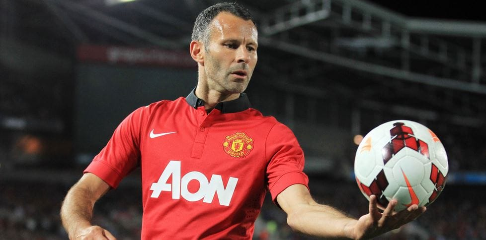

The top 10 all-time Premier League assist leaders are:

- Ryan Giggs (163 Assissts)
- Cesc Fabregas (111 Assissts)
- Wayne Rooney (103 Assissts)
- Frank Lampard (102 Assissts)
- Kevin De Bruyne (100 Assissts)
- Steven Gerrard (92 Assissts)
- James MIlner (90 Assissts)
- David Beckham (80 Assissts)
- Mohamed Salah (75 Assissts)
- Thierry Henry (74 Assissts)